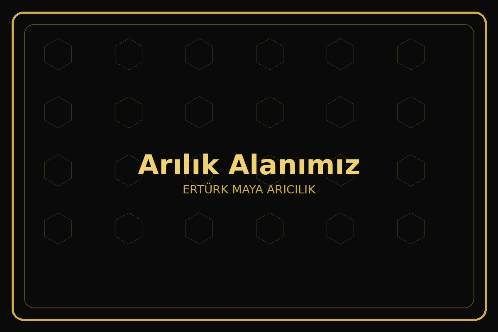
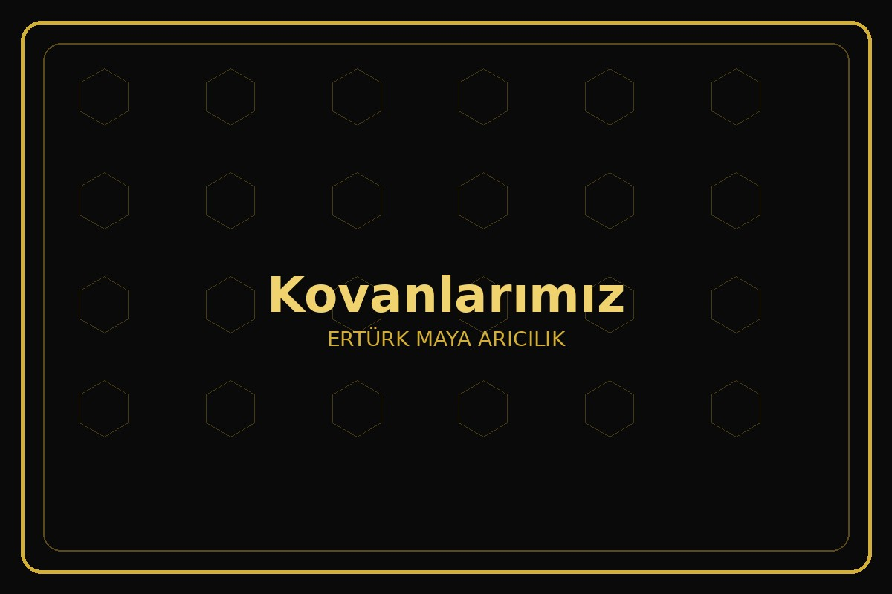
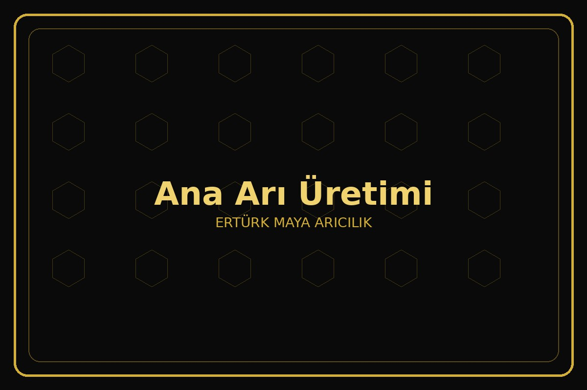
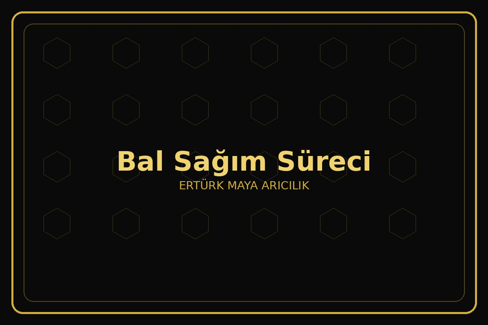
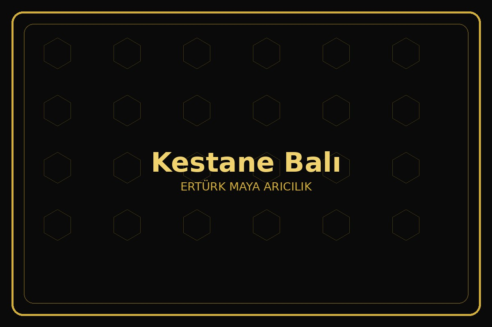
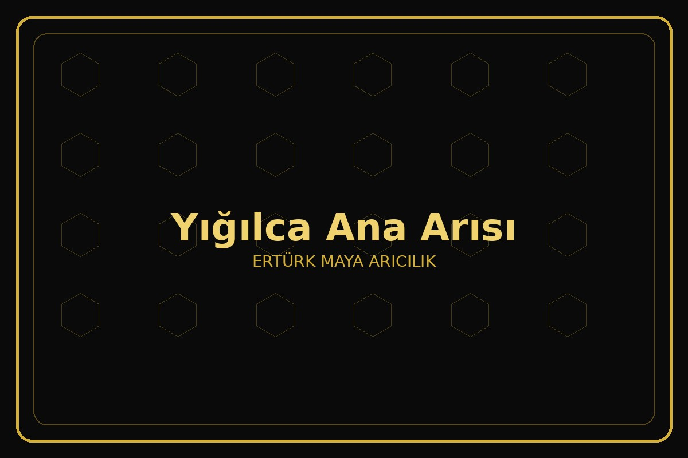

Yığılca Arısı ile Üretim
Yerli Yığılca arısı genetiği korunarak bölgeye uyumlu ve doğal üretim yapılmaktadır.
Yığılca’nın zengin bitki örtüsünde, sabit arıcılık yöntemiyle ürettiğimiz doğal kestane balı, orman gülü balı, polen, propolis ve Kraliçe (Ana) Arı ürünlerini doğrudan üreticisinden sizlere ulaştırıyoruz.
Yerli Yığılca arısı genetiği korunarak bölgeye uyumlu ve doğal üretim yapılmaktadır.
Kolonilerimiz yıl boyunca Düzce Yığılca bölgesinde sabit olarak bulunur. Gezgin arıcılık yapılmaz.
Üretim faaliyetlerimiz Yığılca arısı genetiğinin korunduğu özel bölgede gerçekleştirilmektedir.
Ürünlerimiz aracı olmadan doğrudan üreticisinden müşterilere ulaştırılmaktadır.
Tüm arı ürünlerimiz doğal yöntemlerle elde edilir ve güvenilir üretim ilkeleriyle hazırlanır.
Doğaya, floraya ve arıların doğal yaşam döngüsüne saygılı üretim yaklaşımıyla çalışıyoruz.
Yığılca’nın kestane ormanlarından elde edilen, koyu renkli ve yoğun aromalı doğal bal.
Özel floradan elde edilen, nadir bulunan ve kendine has aromasıyla öne çıkan bal çeşidi.
Yerli Yığılca arısı genetiğini taşıyan, özenle yetiştirilen kaliteli ana arılar.
Yığılca arısı, Türkiye’ye özgü yerli bir arı ırkıdır ve Düzce Yığılca bölgesinde yetiştirilmektedir. Bölge iklimine yüksek uyumu, sakin yapısı, güçlü koloni gelişimi ve kaliteli bal üretimi ile öne çıkar.
Bu özel arı ırkı sayesinde hem doğal ürün kalitesi korunur hem de yerli genetik yapının devamlılığı desteklenir.
Düzce’nin Yığılca ilçesi, Yığılca arısının genetik yapısının korunması amacıyla belirlenmiş özel bir koruma bölgesidir.
ERTÜRK MAYA ARICILIK olarak üretim faaliyetlerimizi bu bölge içerisinde sabit arıcılık yöntemiyle sürdürmekteyiz.
Sabit arıcılık, arı kolonilerinin yıl boyunca aynı bölgede bulundurularak üretim yapılması yöntemidir. Bu yöntemde arılar farklı bölgelere taşınmaz ve doğal yaşam döngüsü korunur.
Özellikle ana arı üretiminde sabit arıcılık yöntemi, genetik saflığın korunması açısından büyük önem taşımaktadır.






ERTÜRK MAYA ARICILIK olarak Düzce Yığılca’daki arılıklarımızdan ürettiğimiz doğal arı ürünlerini ve Yığılca ana arılarını Türkiye’nin tüm illerine güvenli şekilde gönderiyoruz.